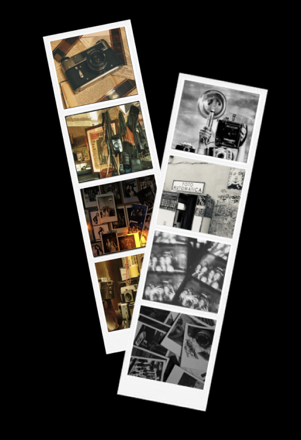
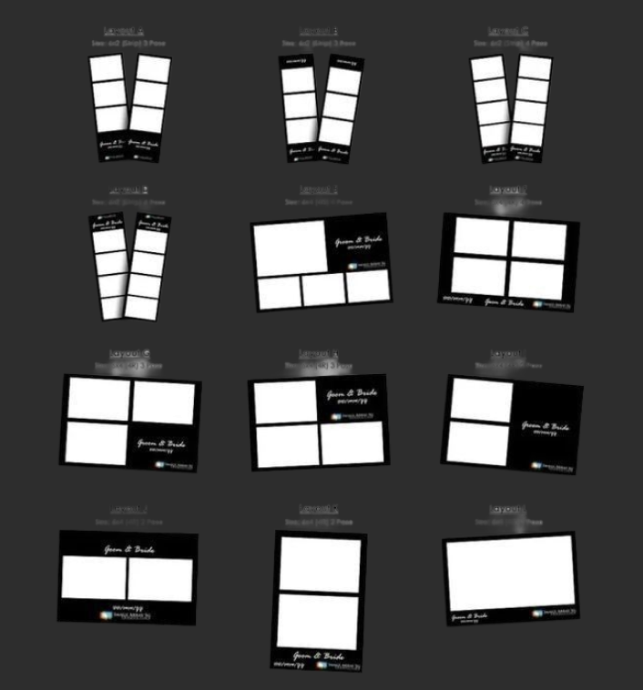

The origin of the Photobooth
The developer of this machine, which he called the “Photobooth” is Anatol Josepho. The finished, product was released in New York in 1925.
The first Photobooth opened on Broadway in Manhatten in 1925-1926. At that time, people had to go to a photographer to have their picture taken, which was one the reasons Josepho started this project.
His idea was to create a machine where people could take pictures without a photographer and pay less than one dollar. the machine took several pictures and automatically developed, washed, and dried them. after a few minutes, you will receive a strip of small photographs.

Different types of photobooth print formats
These are the common photobooth print types:

- 1. Classic photo strip - 2x6 inch, usually 3-4 photos stacked vertically.
- 2. 2x2 grid - Four square arranged in a square.
- 3. Postcard print - A larger single photo, often with a decorative design.
- 4. Vintage black-and-white strip - Black-and-white photos designed to look like older photobooths.
- 5. Color strip - The modern version with 3-4 color photos.
- 6. Sticker prints - Small photos printes with 3-4 color photos
- 7. Mini prints - Small individual photographs rather than a strip
- 8. Double strips - Two identical photo strips printed at the same time
- 9. Collage prints - Several photos arranged together on one larger sheet
- 10. Digital prints/QR versions - Aphysical print plus a digital copy accessed through a QR code.